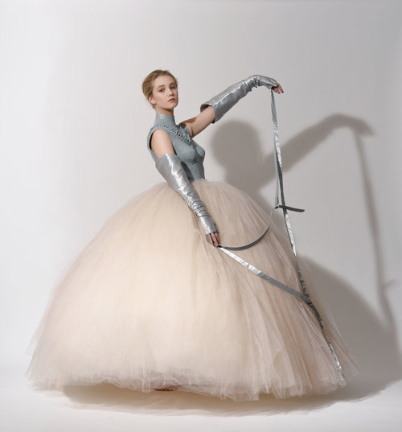
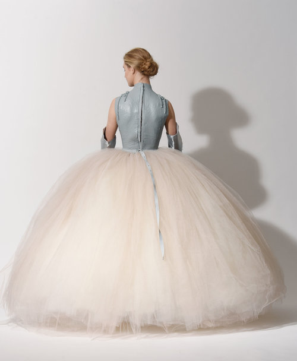
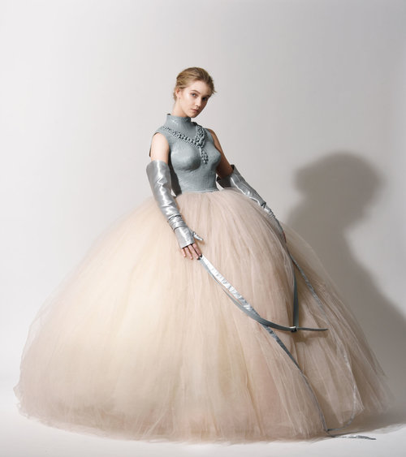
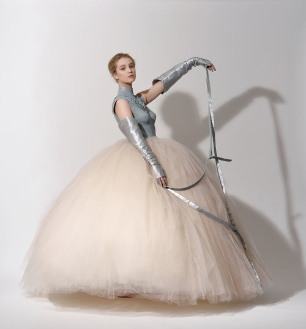
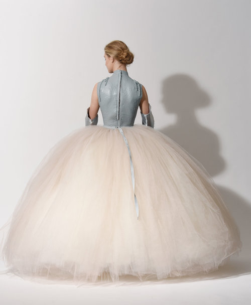
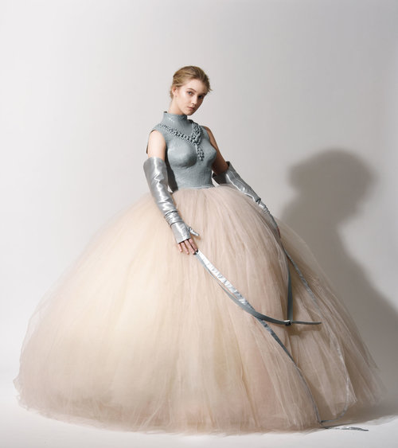

Nobel Creations is an annual project at Beckmans school of design. The brief is to make an creatively free interpretation of an assigned nobel prize, in the form of a gala dress.
The Prize in economic science in memory of Alfred Nobel 2017 was assigned Richard H. Thaler, and the creation was a collaboration between Rita Roslin and Alida Bard.
“For his contribution to behavioural economics”
The dress is an expression of the romantic decadence in the lacking of self restraint and limited rationality. A pair of voluntary restraining gloves, an unreasonable big skirt made out of 100 meter tulle, and traditional jewellery incased in latex is all symbols for the clash of behavioural economic’s influence on people and the Nobel ceremony as an institution.
 




